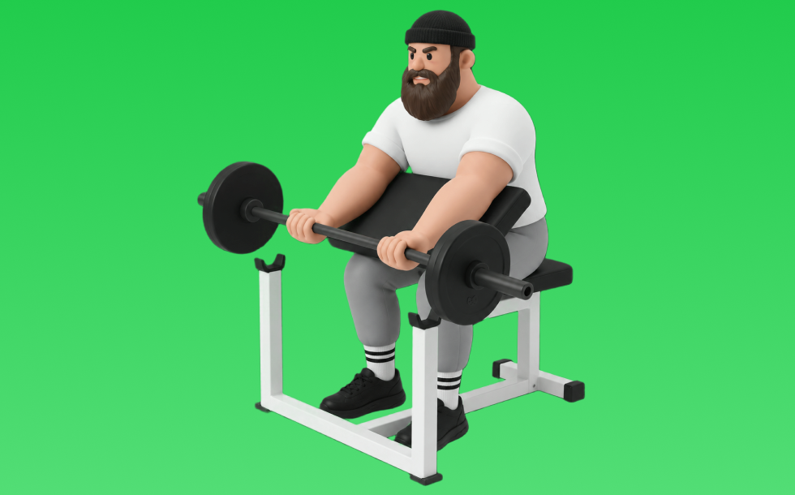

プリーチャーカール

プリーチャーカールとは、バーベルを使って「膝を曲げる」動作で腕（上腕二頭筋）、前腕を鍛える種目です。高重量を扱いやすく、筋力を伸ばしやすいのが特徴で、かかとを引き寄せて収縮し、ゆっくり戻す動作を繰り返します。腕の太さづくりや引く力の補強が期待できます。
- 対象部位
- 腕
- 器具
- バーベル
- 記録形式
- 重量・回数
- 別名
- プリチャー
YouTube動画
-
二頭筋種目で必須クラスのプリチャーカールをセッティングからフォームまで解説！【エニタイムフィットネス】
-
【初心者向け】プリーチャーズベンチカールの正しいフォーム
-
【筋トレ】たくましい力こぶをつくる！プリーチャーカールのやり方解説！【上腕二頭筋】
-
【二頭筋のピークはこれで作れ】至極の1種目！プリーチャーカールを徹底解説
-
【腕トレ解説】ダンベルで腕をもっこりさせるプリチャーカールを解説します
-
【初心者】ダンベルプリーチャーカールのやり方 | 上腕二頭筋の最強種目【ビーレジェンド プロテイン】
-
プリチャーカールで上腕二頭筋を効果的に鍛えるフォームを解説！ダンベル＆バーベルver.
-
【プリチャーカール】効果ない悩みが解決！上腕二頭筋に効かせるやり方のコツを解説
-
【筋トレ】筋トレ歴35年の山本義徳がお勧めするダンベルカールのやり方がこれです！
-
【横川尚隆２】軽いダンベルで効きすぎて上腕二頭筋がちぎれそうになる種目＆ポイント解説です。
-
上腕二頭筋の筋肥大に最も良い種目は？【二頭筋のティアリスト】
-
あの横川尚隆もやっている流行りのワンハンドダンベルカールについてボディビルダージュラシック木澤が解説！
-
解説 鈴木雅 EZバーカールのグリップ
-
【腕トレ】極太になるためのこんがり式腕トレで持田選手の腕が爆発しました
-
【腕トレ】世界二連覇、寺島遼式！“二頭筋が激変する”バーベルカール徹底解説。
-
【ダンベルのみ上腕筋・上腕二頭筋】腕の立体感を作る筋トレ3選
-
ダンベルプリーチャーカールのやり方解説 腕を鍛える！ - 筋トレ講座
YouTubeショート
-
上腕二頭筋を追い込む！EZバー･プリチャーカール【糸井トレーナー】
-
プリーチャーカール（Preacher Curl）の基本フォームとやり方
-
【筋トレ初心者必見 ! | プリチャーカールのやり方】日本人初ミスター・オリンピアに出場した、山岸プロが解説！ #山岸秀匡 #筋トレ初心者 #プリチャーカール 横バージョンはコメ欄から!
-
二頭筋をデカくするプリチャーカールのやり方！
-
最も効果のある上腕二頭筋の種目3選 #フィットネス #筋トレ
-
【今すぐやめろ】上腕二頭筋がつかなくなるプリチャーカール(科学的腕トレ) #shorts
-
【筋トレ】目指せ極太腕へ！正しいプリチャーカールのやり方
-
みなさんはプリーチャーカールやってますか？こんがりとハムちゃんがしっかり上腕二頭筋に効くトレーニングを教えてくれました#volix #腕トレ #ちょこっとおしい #上腕二頭筋 #volixgear
-
ここがポイント！プリーチャーカール
-
こんなバーベルカールはやめろ！正しいフォーム解説 #筋トレ
-
本当に正しいアームカールのやり方
-
このアームカールはやめろ！#shorts
-
上腕二頭筋のおすすめ種目3つを紹介【筋トレ】
-
プリチャーカールは肘を伸ばし切らなくて良い理由
-
腕を太くするダンベルカール #筋トレ #トレーニング #筋肉 #ホームトレーニー #ホームトレーニング #ボディビル #フィジーク
-
みなさんはワンハンドダンベルカールやってますか？持田選手とこんがりさんが上腕二頭筋に効くトレーニングをレクチャーしてくれました！#筋トレ #volix #腕トレ #ちょこっと惜しい #上腕二頭筋
-
極太の腕を作る二頭筋トレ7種目🔥#筋トレ #腕トレ #ボディビル
-
みなさんはケーブルアームカールやってますか？こんがりがしっかり上腕二頭筋に効くトレーニングをレクチャーしてくれました！#volix #腕トレ #ちょこっとおしい #上腕二頭筋 #volixgear
-
上腕二頭筋おすすめのグリップを紹介 #筋トレ #フィットネス
-
二頭筋を上手に作るアームカールの3つの簡単な方法 #上腕二頭筋 #筋トレ #自宅トレーニング
-
【効きやすい方でいいです】#筋トレ #パーソナルジム #アームカール #EZバー
-
腕を太くする為にやるべき種目を伝授。#shorts
-
俺みたいな極太の二頭筋を手に入れる最強トレーニング #shorts
-
【筋トレ初心者必見 | ダンベルカールのやり方】日本人初ミスター・オリンピアに出場した、山岸プロが解説！ #山岸秀匡 #筋トレ初心者 #インクラインダンベルカール 横型バージョンはコメ欄から!
-
誰でもできるバーベルカールの正しいやり方 #筋トレ #筋肉 #トレーニング #ホームトレーニング #ボディビル
-
持田選手とハムちゃんにケーブルを使ったアームカールについてレクチャーしていてもらいました！次はどの種目の解説をやってほしいかコメントしてね！#筋トレ #volix #トレーニング #ちょこっと惜しい
-
持田選手にワンハンドアームカールについてレクチャーしていてもらいました！次はどの種目の解説をやってほしいかコメントしてね！#筋トレ #volix #トレーニング #fitness #workout
-
プリーチャーカール
-
【ダンベル】腕トレ４選 #筋肉
-
コンセントレーションカールの正しいやり方 | ボディビル日本チャンピオンが解説 #shorts【ビーレジェンド プロテイン】
-
【筋トレ初心者必見 | バーベルカールのやり方】日本人初ミスター・オリンピアに出場した山岸プロが解説！(how to barbell curl) #山岸秀匡 #筋トレ初心者 #バーベルカール
-
プリチャーカールの正しいやり方・コツまとめ【上腕二頭筋】#Shorts
-
ダンベルによるワンハンド・プリチャーカール【糸井トレーナー】#アームカール #ダンベル #上腕二頭筋
動作方法
- 肘の位置を固定して構える
- 肘を軸にして持ち上げる
- ゆっくり下ろして負荷を保つ
動作ポイント
- 肘を前後に振りすぎない
- 手首を反らしすぎない
ワンポイントアドバイス
- 肘の位置を固定すると狙った部位に効きやすい
- 回数を急がず、下ろし動作を丁寧に行う
目的別回数設定
目的や体力に応じた一般的な目安です。無理のない範囲で調整してください。
- 筋力アップ
- 1〜5回
- 筋肥大
- 6〜12回
- 持久力アップ
- 13〜20回
YouTube動画について
動画はYouTubeの公開情報をもとに表示しています。内容は投稿者によるもので、Biggrによる監修ではありません。
アプリを入手
筋トレやトレーニングの記録はBiggrにお任せください。今すぐ無料で使い始められます。